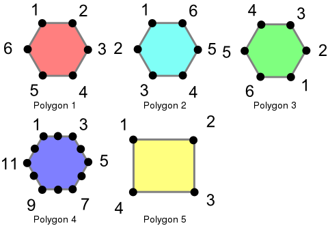

26. Equality¶
26.1. Equality¶
Determining equality when dealing with geometries can be tricky. PostGIS supports three different functions that can be used to determine different levels of equality, though for clarity we will use the definitions below. To illustrate these functions, we will use the following polygons.
These polygons are loaded using the following commands.
CREATE TABLE polygons (id integer, name varchar, poly geometry);
INSERT INTO polygons VALUES
(1, 'Polygon 1', 'POLYGON((-1 1.732,1 1.732,2 0,1 -1.732,
-1 -1.732,-2 0,-1 1.732))'),
(2, 'Polygon 2', 'POLYGON((-1 1.732,-2 0,-1 -1.732,1 -1.732,
2 0,1 1.732,-1 1.732))'),
(3, 'Polygon 3', 'POLYGON((1 -1.732,2 0,1 1.732,-1 1.732,
-2 0,-1 -1.732,1 -1.732))'),
(4, 'Polygon 4', 'POLYGON((-1 1.732,0 1.732, 1 1.732,1.5 0.866,
2 0,1.5 -0.866,1 -1.732,0 -1.732,-1 -1.732,-1.5 -0.866,
-2 0,-1.5 0.866,-1 1.732))'),
(5, 'Polygon 5', 'POLYGON((-2 -1.732,2 -1.732,2 1.732,
-2 1.732,-2 -1.732))');
26.1.1. Exactly Equal¶
Exact equality is determined by comparing two geometries, vertex by vertex, in order, to ensure they are identical in position. The following examples show how this method can be limited in its effectiveness.
SELECT a.name, b.name, CASE WHEN ST_OrderingEquals(a.poly, b.poly)
THEN 'Exactly Equal' ELSE 'Not Exactly Equal' end
FROM polygons as a, polygons as b;
In this example, the polygons are only equal to themselves, not to other seemingly equivalent polygons (as in the case of Polygons 1 through 3). In the case of Polygons 1, 2, and 3, the vertices are in identical positions but are defined in differing orders. Polygon 4 has colinear (and thus redundant) vertices on the hexagon edges causing inequality with Polygon 1.
26.1.2. Spatially Equal¶
As we saw above, exact equality does not take into account the spatial nature of the geometries. There is an function, aptly named ST_Equals, available to test the spatial equality or equivalence of geometries.
SELECT a.name, b.name, CASE WHEN ST_Equals(a.poly, b.poly)
THEN 'Spatially Equal' ELSE 'Not Equal' end
FROM polygons as a, polygons as b;
These results are more in line with our intuitive understanding of equality. Polygons 1 through 4 are considered equal, since they enclose the same area. Note that neither the direction of the polygon is drawn, the starting point for defining the polygon, nor the number of points used are important here. What is important is that the polygons contain the same space.
26.1.3. Equal Bounds¶
Exact equality requires, in the worst case, comparison of each and every vertex in the geometry to determine equality. This can be slow, and may not be appropriate for comparing huge numbers of geometries. To allow for speedier comparison, the equal bounds operator, =, is provided. This operates only on the bounding box (rectangle), ensuring that the geometries occupy the same two dimensional extent, but not necessarily the same space.
SELECT a.name, b.name, CASE WHEN a.poly = b.poly
THEN 'Equal Bounds' ELSE 'Non-equal Bounds' end
FROM polygons as a, polygons as b;
As you can see, all of our spatially equal geometries also have equal bounds. Unfortunately, Polygon 5 is also returned as equal under this test, because it shares the same bounding box as the other geometries. Why is this useful, then? Although this will be covered in detail later, the shot answer is that this enables the use of spatial indexing that can quickly reduce huge comparison sets into more manageable blocks when joining or filtering data.